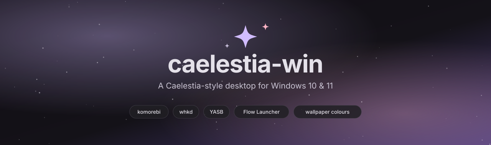
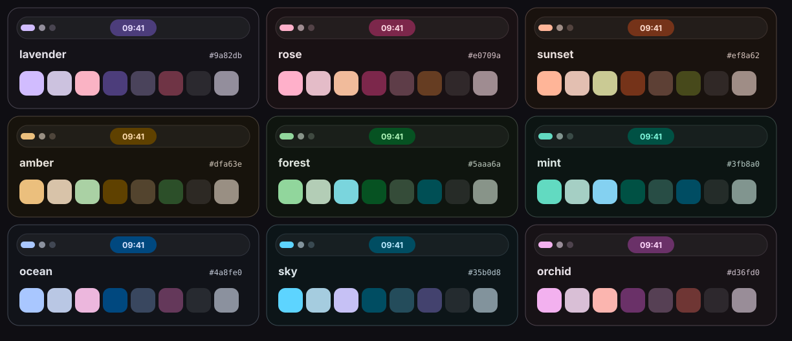
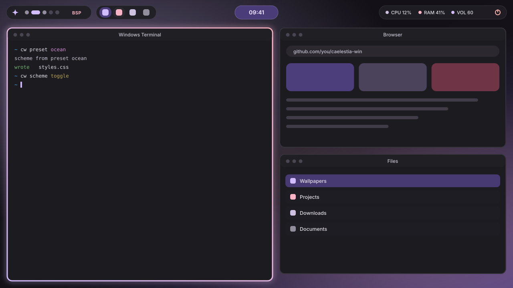

A tiling desktop for Windows that follows your wallpaper
caelestia-win turns Windows 10 and 11 into a keyboard-driven tiling desktop with rounded glowing borders, a floating top bar and colours generated from your wallpaper, inspired by the Linux shell Caelestia.
View on GitHub Beginner guide ShortcutsInstall in one command
git clone https://github.com/krsna0001/caelestia-win
cd caelestia-win
powershell -NoProfile -ExecutionPolicy Bypass -File .\Install.ps1What you get
Tiling
Windows arrange themselves. Nine workspaces.
Windows arrange themselves. Nine workspaces.
Glowing borders
Rounded gradient borders in your theme colours.
Rounded gradient borders in your theme colours.
Floating bar
Workspaces, running apps, clock, battery, volume.
Workspaces, running apps, clock, battery, volume.
Wallpaper colours
Press Alt+W and everything recolours.
Press Alt+W and everything recolours.
Keyboard first
Alt+H/J/K/L to move around, Alt+Space to launch.
Alt+H/J/K/L to move around, Alt+Space to launch.
Safe
No admin rights, backups made, one-command uninstall.
No admin rights, backups made, one-command uninstall.
Themes

Preview
